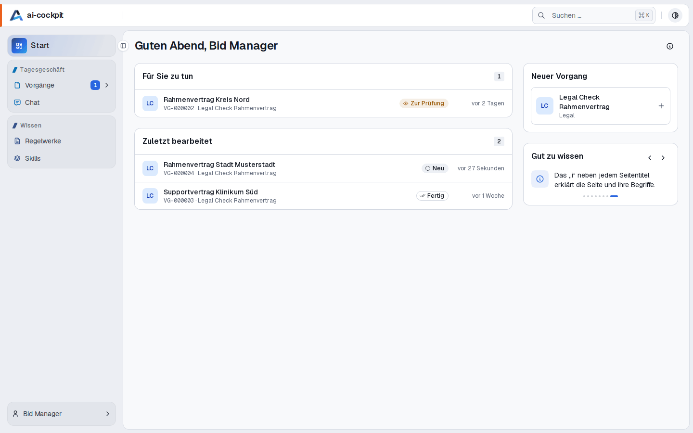

Jede Entscheidung ist begründet
Freigeben, zurückgeben, zurückziehen: Wer entscheidet, schreibt eine Begründung. Sie wird mit Name und Zeitpunkt gespeichert.
Plattform für Fachbereiche
Fachbereiche geben wiederkehrende Prüf- und Wissensarbeit an KI-Agenten ab – eingerichtet statt programmiert. Die Entscheidung trifft ein Mensch, und jeder Schritt ist dokumentiert.

Warum ai-cockpit
Freigeben, zurückgeben, zurückziehen: Wer entscheidet, schreibt eine Begründung. Sie wird mit Name und Zeitpunkt gespeichert.
Die Regeln, nach denen geprüft wird, stehen in versionierten Regelwerken – nicht in einem Prompt. Wirksam ist nur, was freigegeben wurde.
Zu jedem Lauf ist festgehalten, mit welchen Eingaben, welchem Modell und welcher Regelwerksversion er gearbeitet hat.
Die Plattform ist für den Betrieb im eigenen Haus gebaut. Das Modell sitzt hinter einem Gateway, lässt sich austauschen und steht in jedem Ergebnis.
So funktioniert es
Dokumente hochladen und ein kurzes Formular ausfüllen. Welche Felder es gibt, legt der Prozess fest – ein neuer Prozess braucht keine neue Maske.
Er prüft gegen das freigegebene Regelwerk und liefert zu jedem Prüfpunkt einen Befund – mit der Textstelle, auf die er sich stützt.
Freigeben oder mit einem Hinweis zurückgeben. Bei einer Rückgabe startet eine neue Runde, die den Hinweis berücksichtigt.
Einsatzgebiete
Das erste Muster ist die Dokumentprüfung: Ein Dokument wird gegen ein freigegebenes Regelwerk geprüft, das Ergebnis kommt strukturiert zurück, ein Mensch gibt es frei. Ein neuer Prozess ist dasselbe Muster mit anderem Fachwissen.
Geprüft wird aus Sicht des Auftragnehmers: 32 Prüfpunkte in neun Themenbereichen, von der Haftung bis zur Kündigung. Der Prüfbericht landet in Ihrer Word-Vorlage.
Aus einem Befund wird mit einem Klick ein Verbesserungsvorschlag. Wird er angenommen, steht er in der nächsten Version des Regelwerks.
Nachweise gegen eine Norm oder eine interne Richtlinie prüfen.
Vollständig, gültig und im geforderten Wortlaut?
Wo weicht ein Dokument von einer Richtlinie ab?
Zusagen, Konditionen und Formulierungen prüfen, bevor das Angebot rausgeht.
Jede Funktion mit einem Bildschirmfoto – vom Board bis zum Word-Export.